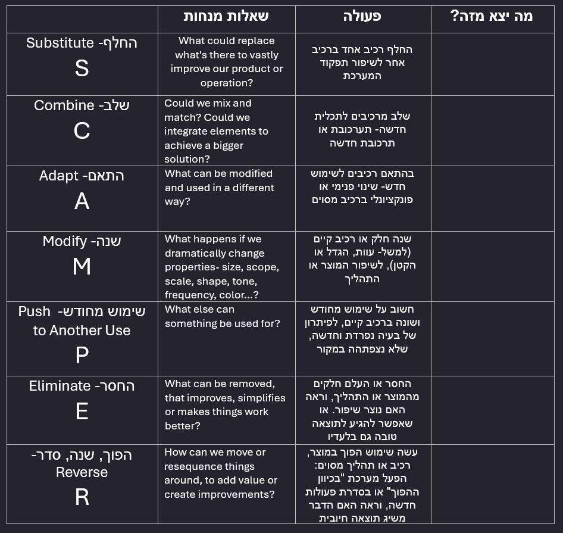

SCAMPER היא שיטה שאפשר להעזר בה להעלאת רעיונות יצירתיים לשיפור מוצרים או שירותים קיימים או יצירת המצאות חדשות.
כל אות ב-SCAMPER מייצגת גישה, ולכל גישה משוייכת שורת שאלות שניתן לשאול על מוצרים קיימים כדי לגלות שיטות לשיפור או הזדמנויות חדשות לגמרי.
Substitute (להחליף) -
אילו רכיבים/אנשים/תהליכים/שיטות.טכנולוגיות בפתרון הנוכחי ניתן להחליף?
Combine (לשלב) -
אילו רכיבים/רעיונות/שלבים/שימושים ניתן לשלב? כיצד נוכל לשלב את המאמצים ומהשאבים שלנו עם אחרים כדי להצליח?
Adapt (להתאים)-
מה ניתן להתאים או להעתיק מתהליך של פתרון אחר לתהליך שלי? מה יכול להיות מודל לחיקוי מוצלח לפתרון שלי?
Modify (לשנות)-
כיצד ניתן לשנות את הפתרון כדי לספק ערך רב יותר/נוסף? כדי שיהיה יעיל/עמיד/יפה/זול/מושך/מהיר/ידידותי יותר?
Put to another use (להמיר לשימוש אחר) -
באילו דרכים ניתן להשתמש בפתרון מלבד השימוש המקורי המיועד שלו? מי עוד יכול להשתמש בפתרון? מהן חמש דרכים שונות שבהן ניתן להשתמש בפתרון?
Eliminate(להסיר) -
מה ניתן להסיר או לייעל? אילו חלקים/צעדים/נהלים לא באמת נחוצים?
Rearange (לסדר מחדש) -
אילו חלקים/תכונות ניתן לסדר/לעצב/לנסח מחדש?
בשימוש ב SCAMPER מייצרים סיעור מוחות ובו מנסים לענות על שאלות ולמצוא רעיונות לכל אחת מהגישות. בסוף סיעור המוחות ניתן לסנן את הרעיונות הראויים והישימים ביותר ולפתח אותם.
דוגמא לטבלת SCAMPER:
